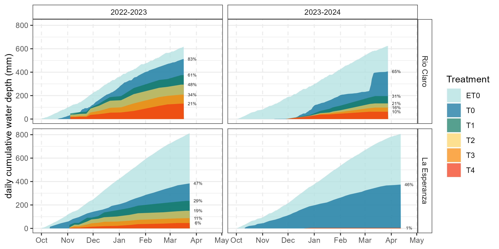

| Percentiles | Retorno (años) | niveles |
|---|---|---|
| 0-2 | >50 | Sequía excepcional |
| 2-5 | 20-50 | Sequía extrema |
| 5-10 | 10-20 | Sequía severa |
| 10-20 | 5-10 | Sequía moderada |
| 20-30 | 1,5-5 | Anormalmente seco |
| 30-70 | - | Normal |
| 70-80 | 1,5-5 | Anormalmente humedo |
| 80-90 | 5-10 | Moderadamente humedo |
| 90-95 | 10-20 | Severamente humedo |
| 95-98 | 20-50 | Extramademente humedo |
| 98-100 | >50 | Excepcionalmente humedo |
Uso eficiente del agua:
De alertas de sequía a riegos de precisión mediante teledetección
Dr. Francisco Zambrano
Contexto
Las actividades humanas, principalmente a través de las emisiones de gases de efecto invernadero, han causado inequívocamente el calentamiento global (IPCC, AR6, 2023)
Desde 1950 los eventos de sequía se han intensificado y han sido más frecuentes (IPCC, AR6, 2023)
A 2°C de anomalía o más, se proyectan sequías agrícolas y ecológicas más frecuentes y/o severas en América del Sur (confianza media a alta) (IPCC, AR6, 2023)
¿Qué es la sequía?
Cuando las condiciones
climáticascambian respecto a su situaciónnormalprovocando undéficitprolongado entre laoferta(precipitación) y lademandadeagua(temperatura)
¿Qué ha pasado en Chile?
Necesidades en Chile respecto al clima
Monitoreo de la situación climática (
ODES)Adaptación a la nueva realidad climática (
SatOri)
I. Observatorio de Sequía para la Agricultura y Biodiversidad de Chile (ODES)
ODES: Proyecto ANID
Financiado por la Agencia Nacional de Investigación y Desarrollo (ANID).
Fondo de investigación estratégica en sequía. Proyecto FSEQ210022
Finalizó el año 2024
Página web https://odes-chile.org
ODES: monitoreo del clima y sequía
- Monitoreo del
climacon frecuenciamensualdesde 1981 hasta ahora, paraChile continental. - Utiliza datos de reanálisis climático
ERA5-LandyMODIS(Espectrorradiómetro de imágenes de media resolución) de vegetación. - Variables:
- Precipitación
- Temperatura
- Demanda Evaporativa de la Atmósfera (ET0)
- Humedad de suelo
- Contenido de agua equivalente de nieve
- Estado de desarrollo de la vegetación
ODES: indicadores de sequía
Indicadores de sequía: Utilizan anomalías de variables climáticas agregadas en varios meses.
Ventajas de los indicadores de sequía
- Permiten comparación entre diferentes zonas climáticas (humedas, aridas, …)
- Permiten comparación entre diferentes estaciones del año.
- Permiten analizar la sequía a corto y largo plazo (ej., mega sequía)
- Se pueden categorizar de acuerdo a la ocurrencia del evento, de acuerdo a su comportamiento histórico.
ODES: Indicadores de sequía
Indicadores derivados en ODES:SPI: índice estandarizado de precipitaciónSPEI: índice estandarizado de precipitación-EvapotranspiraciónEDDI: índice de sequía de demanda evaporativazcSM: índice estandarizado de humedad de suelozcNDVI: índice estandarizado de vegetaciónSWEI: índice estandarizado de contenido de agua equivalente de nievezcNDI: proxy de productividad de la vegetación
Todos calculado a agregaciones de 1, 3, 6, 12, 24 y 36 meses, excepto zcNDVI que está a 1,3 y 6 meses.
ODES: sequía corto plazo
Sequía corto plazo, SPEI de 6 meses.
ODES: sequía largo plazo
Sequía largo plazo, SPEI de 36 meses.
Categorias de sequía
Calculada para cada unidad de acuerdo a su distribución temporal 1981-ahora.
ODES para evaluar impacto en uso de suelo
Dos trabajos presentados en EGU 2024 y 2025
Área de estudio
- Chile continental dividido en siete ecoregiones
Ecoregiones:- Desierto de atacama,
- Puna seca de los Andes centrales,
- Estepa andina meridional,
- Matorral chileno,
- Bosques templados valdivianos,
- Bosques subpolares magallánicos y
- Stepa patagónica
Métodos
Tendencias en índices de sequía
- Tendencias positivas de EDDI (demanda atmosférica) en todas las ecorregiones.
- Disminución de SPI y SSI (oferta hídrica) en ecorregiones de Matorral, Estepa y Bosque Valdiviano.
Tendencias en el cambio de suelo
- Matorrales y boques expandiendo.
- Sabana disminuyendo.
Impacto de la sequía en la productividad de la vegetación
Modelos de RF para tendencia en el uso de suelo
- Los modelos para matorrales y cultivos explican en mayor grado la varianza.
Drivers en cambio de uso de suelo
SETIySPEIdecorto plazoson las variables más impotantantes para explicar las tendencias enmatorrales,pastizales, ysabana.Incendiosexplican cambios en el área cultivada.Luces nocturnasestán asociadas a las tendencias ensuelo desnudo.
II. Sistema Satelital para la Optimización de Riego (SatOri)
Objetivo General
Desarrollar un prototipo de servicio web para la optimización del riego en cerezo (SatOri) que permita a los productores ajustar los tiempos y volúmenes de riego, basado en las relaciones en distintas longitudes de onda de datos públicos obtenidos de satélites con sensores ópticos y de radar; y ensayos de riego deficitario controlado (RDC).
Idea del proyecto.
Área de Estudio

Mediciones
Parámetros Fisiológicos
- Potencial Hídrico Xilemático (\(\Psi_s\))
- Fluorescencia
- Potencial de turgor
- Índice de Área Foliar
- Curva Presión Volumen
Variables meteorológicas
- Temperatura
- Humedad relativa
- Déficit de Presion de Vapor (DPV)
- Evapotranspiración de referencia (ET0)
Variables Satelitales (Sentinel-2)
- Indices de vegetación en la región VNIR/SWIR (16 índices)
- Parámetros biofísicos:
- Índice de Área Foliar
- Contenido de clorofila en la hoja
- fAPAR
- Fracción de Cubierta Vegetal
- Contenido de Agua en la Canopia
Clima
Modelos utilizados
Se evaluaron tres algoritmos de machine learning:
- Extreme Gradient Boosting (XGBoost; Chen y Guestrin (2016))
- Random Forest(RF; Tin Kam Ho (1995))
- Support vector Machine (SVM; Cortes y Vapnik (1995))
Resultados
Uso de Agua
Lamina de Agua Acumulada
Uso de Agua
Volumen de Agua Total Aplicado
Parámetros Fisiológicos
Potencial Hídrico Xilemático (\(\Psi_s\))
Parámetros Fisiológicos
Fluorescencia (\(\Phi_{P0}\))
Parámetros Fisiológicos
Índice de Área Foliar (LAI)
Producción y Calidad
Rendimiento (ton/ha)
Producción y Calidad
Calibre (mm)

Modelo Estimación \(\Psi_s\)
Predicho vs observado
Modelo Estimación \(\Psi_s\)
Importancia de las variables
Modelo Estimación \(\Psi_s\)
\(\Psi_s\) estimado por el modelo en La Esperanza
Modelo Estimación \(\Psi_s\)
\(\Psi_s\) estimado por el modelo en Rio Claro
Web
Gracias!
¿Preguntas?
francisco.zambrano@umayor.cl
Referencias
ODES: https://ODES-Chile.org/ & SatOri: https://s4tori.cl